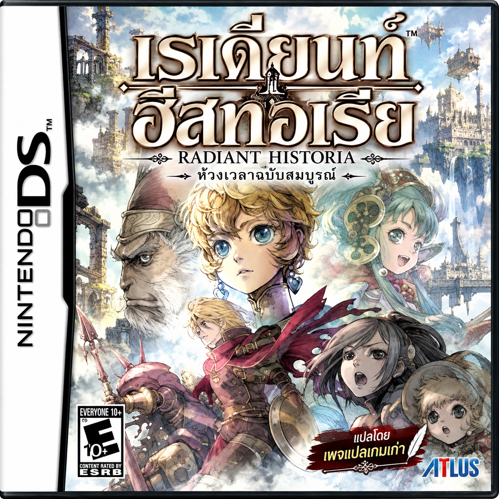

Radiant Historia
เมื่อโลกค่อย ๆ กลายเป็นทะเลทราย สต็อกได้รับหนังสือลึกลับที่พาเขาย้อนกลับไปยังจุดเปลี่ยนของอดีต สลับระหว่างสองเส้นเวลา แก้ไขการตัดสินใจ และค้นหาหนทางหยุดหายนะ แต่การช่วยใครสักคนในวันนี้ อาจเปลี่ยนชะตาของทั้งโลกในวันพรุ่งนี้
เปลี่ยนอดีต เปิดทางสู่อนาคต — ในภาษาไทย
แปลโดยเพจแปลเกมเก่า เลือกรอมต้นฉบับ แล้วสร้างไฟล์ภาษาไทยผ่านเบราว์เซอร์ได้เลย
- เลือกไฟล์ Radiant Historia (USA) นามสกุล .nds ขนาด 128 MiB
- กดแปะแพตช์ ระบบจะตรวจไฟล์และประมวลผลบนอุปกรณ์ของคุณ
- ดาวน์โหลดไฟล์ภาษาไทยที่ได้ แล้วนำไปเปิดเล่น
ดาวน์โหลด Radiant_Historia_THAI.nds
ไฟล์เกมประมวลผลในเครื่อง ไม่ถูกอัปโหลด และบันทึกผลลัพธ์เป็นไฟล์ใหม่ แนะนำ Chrome หรือ Edge บนคอมพิวเตอร์ และเปิดหน้านี้ไว้จนเสร็จ
ข้อมูลรุ่นและการตรวจสอบ
ใช้รอม USA ต้นฉบับที่ยังไม่ผ่านการดัดแปลง ระบบตรวจ SHA-256 ของต้นฉบับ แพตช์ และผลลัพธ์ก่อนให้ดาวน์โหลด การตรวจไฟล์ไม่ได้ยืนยันการเล่นจบเกม
SHA-256 ต้นฉบับ:2dfb6544317750bc2bed23612f1cd946c96a06966514952c5f28d34d464155ba